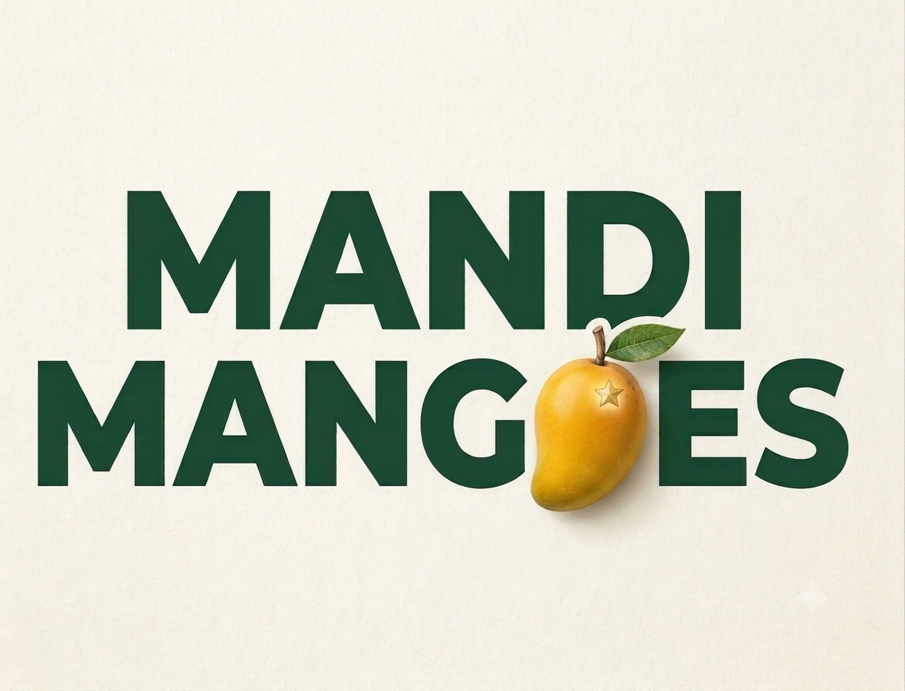
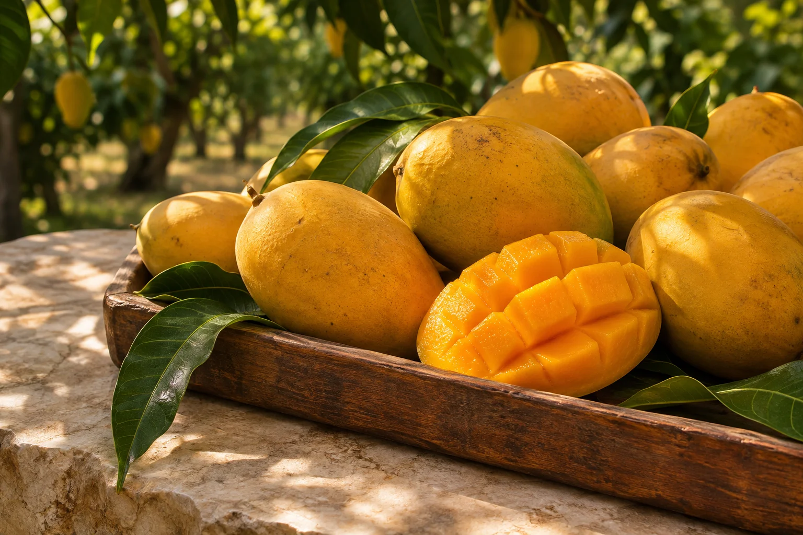

Goodness from
the very beginning.
Natural growing is at the heart of Mango Mandi. It’s how we start, not something we add at the end.


Naturally grown. Never rushed.
Mangoes worth getting your hands messy for.

For the pickle jar, the patient ones, and the can’t-wait ones.
Prices include GST · free delivery
Try “raw”, “semi-raw”, “ripe”, or one of these:
We believe a great mango needs good soil, sunshine and time. Our mangoes are grown naturally, without chemical inputs. Nothing hurried. Nothing unnecessary.
Natural growing is at the heart of Mango Mandi. It’s how we start, not something we add at the end.
Sharp and green, gently turning, or golden and ready. Your mangoes should fit your moment.
That unmistakable fragrance. That beautifully messy bite. A little ritual worth looking forward to.
Here is everything that happens before a box reaches you, and everything we leave out.
Every mango begins as a tiny flower. A tree carries thousands of them; only a handful stay on to become fruit.
The fruit fills out slowly on the branch for three to four months, warmed by the sun and fed by the soil. We don’t hurry it along.
Each mango is picked when it is mature but still firm, with a little stalk left on so the sap never stains the skin.
No carbide, no gas chambers. Our mangoes ripen in straw and hay, in their own time, the way they always have.
Raw for the pickle jar, semi-raw to finish at home, or ripe for tonight: each box leaves the morning it’s packed.
“A great mango needs good soil, sunshine and time. Everything else is just waiting.”
The Mango Mandi way
Choose raw for a firm, tangy mango for pickles and cooking; semi-raw if you want it to ripen at home; or ripe for eating soon. Ripening time varies with the fruit and storage conditions.
You choose your ripeness, box and harvest week ahead of the season and pay in full by Razorpay. Cancel any time before packing for a full refund.
Yes. For requirements above 100 kg, build your bulk list on the bulk page and send it as an enquiry with your delivery details. Commercial terms will be confirmed individually.
Keep unripe mangoes at room temperature in a ventilated place, away from direct sunlight. Once ripe, refrigerate them and enjoy soon. Wash before cutting.